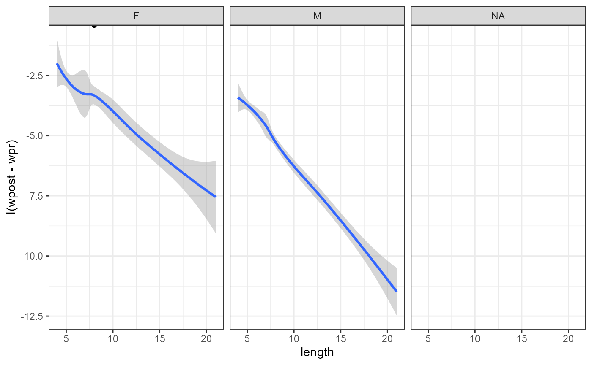
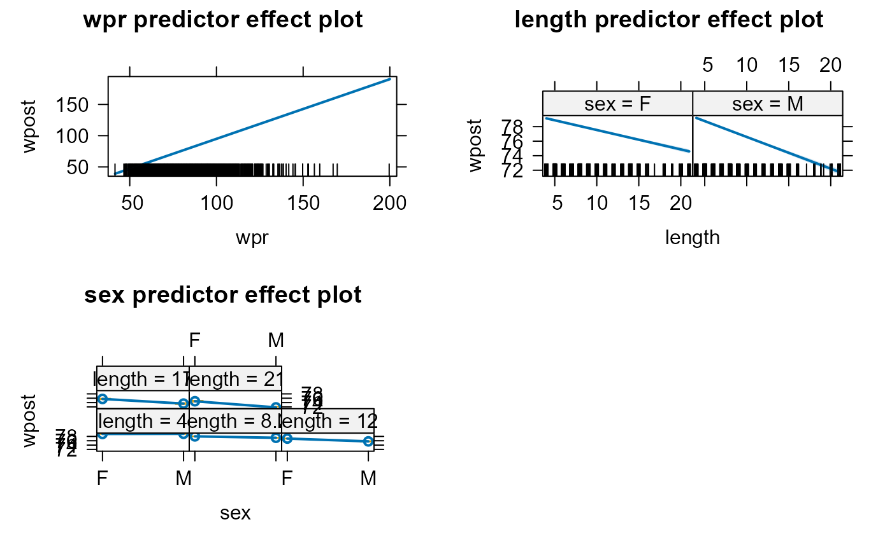
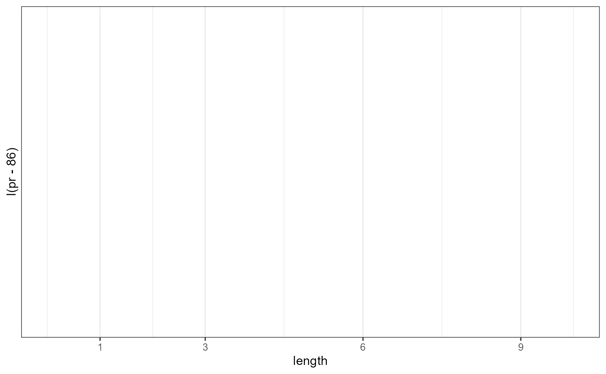

fast_study.rmdI have a dataset describing a study which involved fasting 1400+
subjects.
I have no recollection where the data originated :(
Not hashing out this vignette as beautifully as it would be desirable until I find out where the data came from.
## Warning: package 'nlme' was built under R version 4.3.2## Loading required package: carData## lattice theme set by effectsTheme()
## See ?effectsTheme for details.## Warning: package 'dplyr' was built under R version 4.3.2##
## Attaching package: 'dplyr'## The following object is masked from 'package:nlme':
##
## collapse## The following objects are masked from 'package:stats':
##
## filter, lag## The following objects are masked from 'package:base':
##
## intersect, setdiff, setequal, union
library(ggplot2)
studtab2 <- readr::read_delim(here::here("inst", "extdata", "studtab2.csv"),
";", escape_double = FALSE, trim_ws = TRUE) ## Rows: 1423 Columns: 4## ── Column specification ────────────────────────────────────────────────────────
## Delimiter: ";"
## chr (1): sex
## dbl (3): length, wpr, wpost
##
## ℹ Use `spec()` to retrieve the full column specification for this data.
## ℹ Specify the column types or set `show_col_types = FALSE` to quiet this message.
studtab2$sex <- as.factor(studtab2$sex)
#studtab2 <- studtab2[complete.cases(studtab2),]
studtab2 %>%
ggplot(aes(x=length,y = I(wpost - wpr))) +
theme_bw() +
geom_point() +
facet_wrap(facets = "sex") +
geom_smooth()## `geom_smooth()` using method = 'loess' and formula = 'y ~ x'## Warning: Removed 118 rows containing non-finite values
## (`stat_smooth()`).## Warning: Removed 118 rows containing missing values (`geom_point()`).
##
## Call:
## lm(formula = wpost ~ (wpr + length) * sex, data = studtab2)
##
## Residuals:
## Min 1Q Median 3Q Max
## -3.539 -0.655 -0.045 0.528 74.250
##
## Coefficients:
## Estimate Std. Error t value Pr(>|t|)
## (Intercept) 2.271248 0.406509 5.587 2.81e-08 ***
## wpr 0.949463 0.005458 173.964 < 2e-16 ***
## length -0.259677 0.023500 -11.050 < 2e-16 ***
## sexM 1.037538 0.695682 1.491 0.136
## wpr:sexM -0.003183 0.007997 -0.398 0.691
## length:sexM -0.164469 0.037853 -4.345 1.50e-05 ***
## ---
## Signif. codes: 0 '***' 0.001 '**' 0.01 '*' 0.05 '.' 0.1 ' ' 1
##
## Residual standard error: 2.288 on 1299 degrees of freedom
## (118 observations deleted due to missingness)
## Multiple R-squared: 0.9846, Adjusted R-squared: 0.9845
## F-statistic: 1.657e+04 on 5 and 1299 DF, p-value: < 2.2e-16
anova(mod)## Analysis of Variance Table
##
## Response: wpost
## Df Sum Sq Mean Sq F value Pr(>F)
## wpr 1 432151 432151 82516.2946 < 2.2e-16 ***
## length 1 1540 1540 294.1205 < 2.2e-16 ***
## sex 1 69 69 13.1031 0.0003061 ***
## wpr:sex 1 11 11 2.0314 0.1543199
## length:sex 1 99 99 18.8790 1.501e-05 ***
## Residuals 1299 6803 5
## ---
## Signif. codes: 0 '***' 0.001 '**' 0.01 '*' 0.05 '.' 0.1 ' ' 1## Analysis of Variance Table
##
## Model 1: wpost ~ (wpr + length) * sex
## Model 2: wpost ~ wpr + length * sex
## Res.Df RSS Df Sum of Sq F Pr(>F)
## 1 1299 6803.1
## 2 1300 6803.9 -1 -0.82962 0.1584 0.6907
summary(mod2)##
## Call:
## lm(formula = wpost ~ wpr + length * sex, data = studtab2)
##
## Residuals:
## Min 1Q Median 3Q Max
## -3.543 -0.644 -0.052 0.522 74.223
##
## Coefficients:
## Estimate Std. Error t value Pr(>|t|)
## (Intercept) 2.366702 0.328118 7.213 9.27e-13 ***
## wpr 0.947980 0.003988 237.707 < 2e-16 ***
## length -0.258105 0.023158 -11.145 < 2e-16 ***
## sexM 0.795370 0.337174 2.359 0.0185 *
## length:sexM -0.167901 0.036845 -4.557 5.68e-06 ***
## ---
## Signif. codes: 0 '***' 0.001 '**' 0.01 '*' 0.05 '.' 0.1 ' ' 1
##
## Residual standard error: 2.288 on 1300 degrees of freedom
## (118 observations deleted due to missingness)
## Multiple R-squared: 0.9846, Adjusted R-squared: 0.9845
## F-statistic: 2.072e+04 on 4 and 1300 DF, p-value: < 2.2e-16
#plot(mod2)
# No.1371
studtab2[1371,]## # A tibble: 1 × 4
## sex length wpr wpost
## <fct> <dbl> <dbl> <dbl>
## 1 F 8 54.3 126
#obviously wrong
studtab2 <- studtab2[-1371,]
mod2 <- lm(wpost ~ wpr + length * sex, studtab2)
mod1_refit <- update(mod,data=studtab2)
anova(mod1_refit,mod2)## Analysis of Variance Table
##
## Model 1: wpost ~ (wpr + length) * sex
## Model 2: wpost ~ wpr + length * sex
## Res.Df RSS Df Sum of Sq F Pr(>F)
## 1 1298 1271.9
## 2 1299 1281.9 -1 -9.9916 10.196 0.001441 **
## ---
## Signif. codes: 0 '***' 0.001 '**' 0.01 '*' 0.05 '.' 0.1 ' ' 1
summary(mod2)##
## Call:
## lm(formula = wpost ~ wpr + length * sex, data = studtab2)
##
## Residuals:
## Min 1Q Median 3Q Max
## -3.5541 -0.5851 0.0352 0.5733 4.2567
##
## Coefficients:
## Estimate Std. Error t value Pr(>|t|)
## (Intercept) 1.987426 0.142569 13.940 < 2e-16 ***
## wpr 0.952179 0.001733 549.558 < 2e-16 ***
## length -0.260995 0.010056 -25.954 < 2e-16 ***
## sexM 0.812436 0.146412 5.549 3.48e-08 ***
## length:sexM -0.169604 0.015999 -10.601 < 2e-16 ***
## ---
## Signif. codes: 0 '***' 0.001 '**' 0.01 '*' 0.05 '.' 0.1 ' ' 1
##
## Residual standard error: 0.9934 on 1299 degrees of freedom
## (118 observations deleted due to missingness)
## Multiple R-squared: 0.9971, Adjusted R-squared: 0.9971
## F-statistic: 1.107e+05 on 4 and 1299 DF, p-value: < 2.2e-16
plot(mod2,3)
mod3 <- gls(wpost ~ wpr + length * sex,
data = studtab2,
weights = varPower(form = ~ length),
na.action = na.omit)
plot(predictorEffects(mod3))
pr <- expand.grid( sex = "M",
length = 0:10,
wpr = 86)
pr$pr <- predict(mod2,newdata=pr,se.fit=TRUE)$fit
pr$se <- predict(mod2,newdata=pr,se.fit=TRUE)$se.fit
pr %>%
ggplot(aes(x= length, y = I(pr - 86))) +
theme_bw() +
geom_line() +
scale_x_continuous(breaks = c(1,3,6,9))